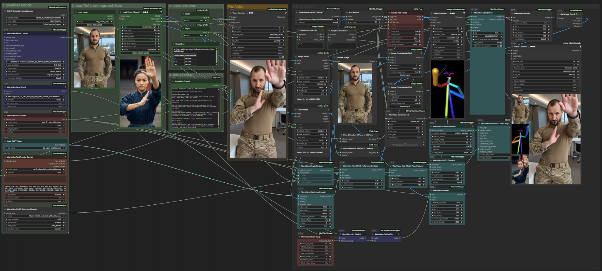

GENERATIVE AI / MOTION GUIDANCE
AI MOTION TRANSFER
One still portrait. One martial arts reference video. A new performance driven by estimated body poses and reference-guided video generation.
01 / THE INPUTS
Appearance meets movement.

The portrait supplies the character’s appearance. The reference video supplies the martial arts movement. The pipeline extracts pose information from the video and uses it to guide the generated performance.
02 / GENERATED PERFORMANCE
Same character. New motion.
AI-generated motion transfer · Wan Animate / NLF Pose / SCAIL
03 / SIDE-BY-SIDE
Reference versus AI result.
Play both clips together to compare the movement. Their source frame rates and durations may differ, so this is a visual comparison rather than a frame-accurate motion evaluation.
04 / TECHNICAL WORKFLOW
Inside ComfyUI.
Actual node graph used for the experiment, combining Wan video generation with NLF pose estimation and SCAIL reference and pose conditioning.

Click to view the full-resolution workflow.
Load inputs
Portrait image and motion-reference video.
Extract pose
NLF estimates body pose across the video frames.
Guide generation
SCAIL pose and appearance conditioning guide the Wan model.
Render output
Sample, decode and export the generated animation.
THE EXPERIMENT
Controlled motion, recognizable character.
This case study demonstrates reference-driven human motion transfer. The resulting video is generated rather than captured with a camera; preserving fine hand anatomy and exact timing remains a practical challenge in AI video generation.
← BACK TO PORTFOLIO